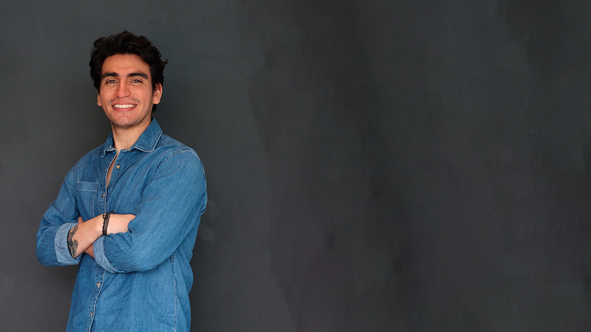

I create captivating and
functional designs.

About Me
Welcome to my portfolio webiste! I'm a passionate Industrial and Digital & Web Designer based in Milan, with a keen eye for aesthetic detail and a drive for innovation. With a diverse skill set that spans both physical and digital domains, I bring a unique perspective. With a strong foundation in industrial design, I implement a blend of creativity and technical principles to my work. My journey as a multidisciplinary designer has allowed me to work on a wide range of projects, from conceptualizing products and services to crafting engaging digital and web experiences. I am dedicated to crafting solutions that inspire and leave a lasting impact; I believe in the power of design to shape the way we interact with the world.
As a Design Management Specialist, I have a strong proficiency in organizing and leading management processes, as well as aiming for innovation and product development. In my view, it is crucial to establish interdisciplinary teams that promote the collaborative construction of design knowledge for projects or companies, drawing from a wide range of expertise.
My perspective on design management and its impact on organizations is centered around strengthening the relationship between design and business, while cultivating a business culture that embraces design thinking. By integrating strategic design processes within organizations, one can analyze the interplay of current and potential phenomena that inform strategic decision making.
I was born in Bogotá, Colombia, and from a young age, I displayed a keen interest in arts and technology. This interest, particularly in handcrafted objects and digital and electronic devices, gradually developed into a passion throughout my high school and bachelor's years.
I am an avid sports enthusiast, having practiced football, basketball, volleyball, and cycling since my childhood. In addition, I consider myself a dedicated follower of technology and pop culture. I actively keep up with the latest tech device releases in the market and indulge in various movies, books, and series that capture my interest as a hobby. Furthermore, during my free time, I thoroughly enjoy playing video games.
You can read more about my experience, skills, education and more in the PDF attached bellow.
Click here to see my Curriculum (PDF)